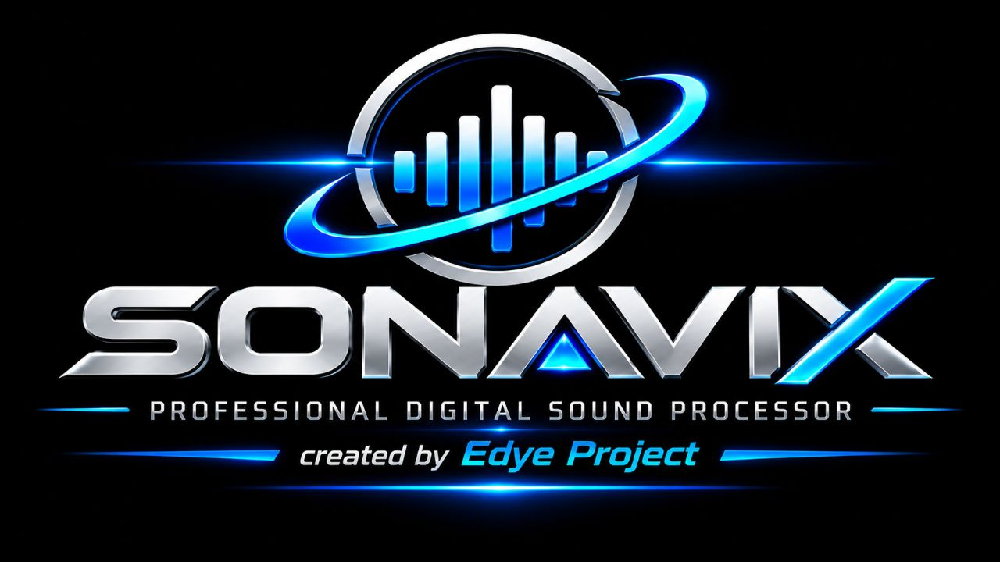
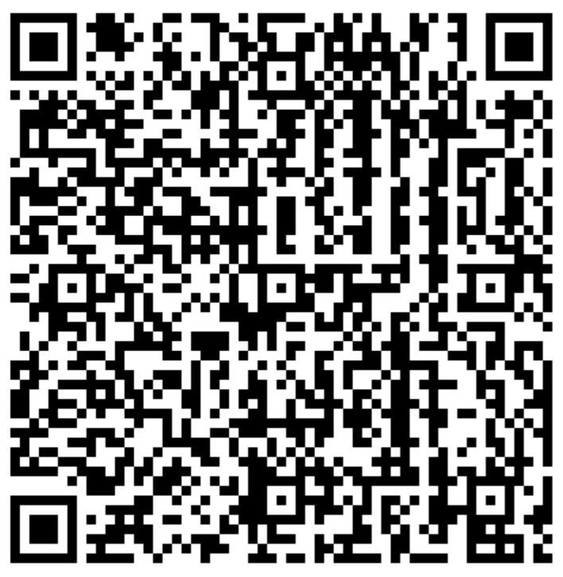

⚡ INFO: Aplikasi ini masih dalam tahap pengembangan (Versi Beta). Mohon maklum apabila masih ditemukan bug atau ketidaksesuaian fungsi. Masukan Anda sangat membantu penyempurnaan versi berikutnya.
⚡ INFO: Aplikasi ini masih dalam tahap pengembangan (Versi Beta). Mohon maklum apabila masih ditemukan bug atau ketidaksesuaian fungsi. Masukan Anda sangat membantu penyempurnaan versi berikutnya.
Versi 1.0.0 Beta
18 MB • Android
Download APK (18 MB)
Direct download • Bebas iklan • Link permanen
Dukungan & Donasi
Aplikasi ini gratis digunakan. Jika bermanfaat, kamu bisa mendukung pengembangan lewat QRIS di bawah ini:
